One of the main reasons we learned about reference angles is to help us solve trigonometric equations. Remember that there are always two angles between \(0\degree\) and \(180\degree\) with a given sine ratio between 0 and 1.
For example, the two solutions to the equation \(~\sin (\theta) = 0.4226~\) are \(25\degree\) and \(155\degree\text{.}\) That is,
These two angles are supplementary, so they have the same reference angle, as shown below.
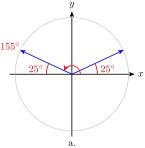
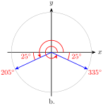
There are also two solutions between \(0\degree\) and \(360\degree\) to the equation \(\sin (\theta) = -0.4226\text{.}\) They are the angles in the third and fourth quadrants whose reference angle is \(25\degree\text{,}\) namely \(205\degree\) and \(355\degree\text{,}\) as shown above. But your calculator will only give you one of these angles!
Example4.33.
You are riding on the Ferris wheel we modeled in Section 4.2, where your height above ground is given as a function of \(\theta\) by
\begin{equation*}
h = 100 + 100 \sin (\theta)
\end{equation*}
When your height is at least 136 feet, you can see the snow on a distant mountain range. Between what angles of rotation can you see snow?
Solution.
Look at the diagram of the Ferris wheel to see that when your height is 136 feet, the sine of the angle \(\theta\) is \(\dfrac{36}{100}\text{,}\) or 0.36. The angle with sine 0.36 is
And you will be able to see snow until you descend again below 136 feet. That will happen at the angle in the second quadrant with sine 0.36, namely, the second quadrant angle with reference angle 21.1°. And that angle is
The angle \(-40\degree\) is in the fourth quadrant, but it is not between \(0\degree\) and \(360\degree\text{.}\) We need an angle that is coterminal with \(-40\degree\text{,}\) so we add \(360\degree\text{.}\)
Thus, one of the solutions is \(320\degree\text{.}\)
The sine is also negative in the third quadrant, so there should also be a solution in the third quadrant. The reference angle for \(320\degree\) is \(40\degree\text{,}\) and the third-quadrant angle with reference angle \(40\degree\) is \(220\degree\text{,}\) as shown at right. You can check that, rounded to four decimal places, both angles satisfy the equation, that is,
In the previous example we found two solutions of the equation \(\sin (\theta) = -0.6428\text{.}\) Actually, there are infinitely many solutions -- namely, all the angles coterminal with \(320\degree\) or \(220\degree\text{.}\) Because we can easily find coterminal solutions by adding or subtracting multiples of \(360\degree\text{,}\) when solving an equation we usually list only the solutions between \(0\degree\) and \(360\degree\text{.}\)
Caution4.37.
When you ask your calculator to find an angle with a given sine (or cosine or tangent), it will give you only one of the many possible answers. You must be careful to choose the appropriate answer for the situation, using reference and coterminal angles.
Checkpoint4.38.
Solve the equation \(\tan (\theta) = -0.4\) for angles between \(0\degree\) and \(360\degree\text{.}\)
Answer.
\(338.2\degree\text{,}\)\(~158.2\degree\)
SubsectionThe Unit Circle
Now that we are thinking of angles as rotations, we’ll introduce a tool called the unit circle that will be useful as we proceed.
Figure (a) below shows an angle of \(30\degree\) in standard position in a circle of radius 2. The hypotenuse of its reference triangle is the radius of the circle, so the legs of the triangle have lengths 1 and \(\sqrt{3}\text{.}\) The coordinates of the point \(P\) where the terminal side meets the circle are thus \((\sqrt{3}, 1)\text{.}\) (You can check that these coordinates satisfy the equation of the circle, \(x^2 + y^2 = 4\text{.}\))
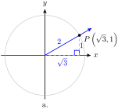
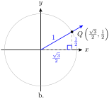
Now consider the circle of radius 1 in Figure (b). A circle of radius 1 is called a unit circle. In this figure, the hypotenuse of the reference triangle for \(30\degree\) has length 1. What are the coordinates of the point \(Q\) where the terminal side meets the circle? Each side of this triangle is \(\frac{1}{2}\) the length of the sides of the similar triangle in Figure (a), so the coordinates of \(Q\) are \(\left(\frac{\sqrt{3}}{2}, \frac{1}{2}\right)\text{.}\) (Once again, you should check that these coordinates satisfy the equation of the circle, \(x^2 + y^2 = 1\text{.}\))
Perhaps you recognize the coordinates of the point \(Q\text{.}\) Because \(r = 1\) in this circle, the definitions of the sine and cosine are
\begin{equation*}
\cos (\theta) = \dfrac{x}{r} = \dfrac{x}{1} = x ~~~~\text{and}~~~~ \sin (\theta) = \dfrac{y}{r} = \dfrac{y}{1} = y
\end{equation*}
We see that the coordinates \((x,y)\) of \(Q\) are given by \((\cos (\theta), \sin (\theta))\text{.}\) We have discovered an important property of unit circles.
Angles in a Unit Circle.
Let \(P\) be a point on a unit circle determined by the terminal side of an angle \(\theta\) in standard position. Then the coordinates \((x,y)\) of \(P\) are given by
Find the coordinates of point \(P\) on the unit circle shown at right.
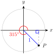
Solution.
The coordinates of \(P\) are given by
\begin{equation*}
x = \cos (315\degree),~~~y = \sin (315\degree)\text{.}
\end{equation*}
The reference angle for \(315\degree\) is \(~ 360\degree - 315\degree = 45\degree\text{,}\) so the trig ratios of \(315\degree\) are the same as the ratios for \(45\degree\text{,}\) up to sign.
Because \(315\degree\) is in the fourth quadrant, we have \(\cos (315\degree) = \frac{1}{\sqrt{2}}\) and \(\sin (315\degree) = \frac{-1}{\sqrt{2}}\text{.}\) Thus, the coordinates of \(P\) are \(\left(\frac{1}{\sqrt{2}}, \frac{-1}{\sqrt{2}}\right)\text{.}\)
Checkpoint4.40.
Find the sine, cosine, and tangent of the angle \(\varphi\) shown at right.
Use a protractor to draw an angle \(36\degree\) in standard position.
Estimate the coordinates of the point \(P\) where the terminal side of the angle intersects the circle of radius \(r=2\text{.}\)
Calculate approximate values for \(\cos (\theta)\) and \(\sin (\theta)\) using the coordinates of \(P\text{.}\)
Estimate the coordinates of the point \(Q\) where the terminal side of the angle intersects the circle of radius \(r=1\text{.}\)
Calculate approximate values for \(\cos (\theta)\) and \(\sin (\theta)\) using the coordinates of \(Q\text{.}\)
Use a protractor to draw an angle \(107\degree\) in standard position. Repeat parts (a)-(d) for this new angle.
Use a protractor to draw an angle \(212\degree\) in standard position. Repeat parts (a)-(d) for this new angle.
Use a protractor to draw an angle \(325\degree\) in standard position. Repeat parts (a)-(d) for this new angle.
What do you notice about the coordinates of the point located on the unit circle by an angle and the values of the trig ratios of that angle?
SubsectionLocation by Coordinates
One of the most useful applications of the trigonometric ratios allows us to find distances or locations specified by angles. Starting with the definitions of sine and cosine,
we can solve for \(x\) and \(y\text{,}\) the coordinates of points on the terminal side of the angle, and obtain the following results.
Coordinates.
If point \(P\) is located at a distance \(r\) from the origin in the direction specified by angle \(\theta\) in standard position, then the coordinates of \(P\) are
\begin{equation*}
\blert{x = r \cos (\theta) ~~~~ \text{and} ~~~~ y = r \sin (\theta)}
\end{equation*}
These formulas make sense when we think of the unit circle. On a unit circle, the coordinates of a point designated by angle \(\theta\) are \(\Big(\cos (\theta), \sin (\theta)\Big)\text{,}\) as shown at right. On a circle of radius \(r\text{,}\) the angle \(\theta\) forms a similar triangle whose dimensions are scaled up by a factor of \(r\text{.}\) In particular, the legs of the new triangle are \(r\) times larger than the original triangle.
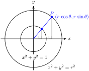
Example4.41.
Point \(P\) is located 6 centimeters from the origin in the direction of \(292\degree\text{.}\) Find the coordinates of \(P\text{,}\) rounded to hundredths.
Solution.
The location of point \(P\) is shown at right. We see that \(r = 6\text{,}\) and we can use a calculator to evaluate \(\cos (292\degree)\) and \(\sin (292\degree)\text{.}\)
\begin{align*}
x \amp = r \cos (292\degree) \amp\amp \text{and} \amp y \amp = r \sin (292\degree)\\
\amp = 6(0.3746) \amp\amp\amp \amp = 6(-0.9272)\\
\amp = 2.2476 \amp\amp\amp \amp = -5.5632
\end{align*}
The coordinates of \(P\) are approximately \((2.25, -5.56)\text{.}\)
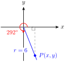
Checkpoint4.42.
You find an old map that shows a buried treasure located 500 yards from the big oak tree in the direction \(215\degree\text{,}\) as shown below. You don’t have anything with you to measure angles, but you have your calculator.
Find the cosine of \(215\degree\text{.}\) How far west should you walk from the big oak in order to be directly north of the treasure?
Find the sine of \(215\degree\text{.}\) How far south should you walk from your present location before you begin digging?
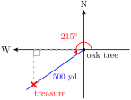
Answer.
409.58 yds
286.79 yds
SubsectionBearings
Navigational directions for ships and planes are sometimes given as bearings, which are angles measured clockwise from north. For example, a bearing of \(110\degree\) is equivalent to an angle of \(-20\degree\) in standard position, or to its coterminal angle \(340\degree\text{,}\) as shown at right.
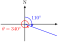
From this example, we see that to convert a bearing to an angle \(\theta\) in standard position, we can subtract the bearing from \(90\degree\text{,}\) or
We would like the \(y\)-coordinate of Francine’s position, so we calculate \(y = r \sin (205\degree)\text{.}\)
\begin{align*}
y \amp = r \sin (205\degree)\\
\amp = 60(-0.4226) = -25.36
\end{align*}
Francine is about 25.4 miles south of the airport.
Checkpoint4.44.
Delbert leaves the airport and flies 150 miles at a bearing of \(132\degree\text{.}\) How far east of the airport is he at that time?
Answer.
111.5 mile
SubsectionAngle of Inclination
The tangent function also has applications in measurement. The figure at right shows a line in the \(xy\)-plane. The angle \(\alpha\) measured in the positive direction from the positive \(x\)-axis to the line is called the angle of inclination of the line.
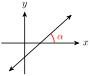
Recall that the slope of a line is given by the ratio \(m = \dfrac{\Delta y}{ \Delta x} =\dfrac {\text{change in}~ y}{\text{change in}~x}\) as we move from one point to another on the line. So, if we create a right triangle by dropping a perpendicular segment from the line to the \(x\)-axis, the ratio of sides \(\dfrac {\text{opposite}}{\text{adjacent}}\) gives the slope of the line.
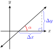
But the ratio \(\dfrac {\text{opposite}}{\text{adjacent}}\) is also the tangent of the angle \(\alpha\text{.}\)
Angle of Inclination.
The angle of inclination of a line is the angle \(\alpha\) measured in the positive direction from the positive \(x\)-axis to the line. If the slope of the line is \(m\text{,}\) then
The angle of inclination is \(36.9\degree\text{.}\)
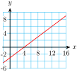
Checkpoint4.46.
Find the angle of inclination of the line shown at right,
\begin{equation*}
y = \dfrac{-6}{5}x + 2
\end{equation*}
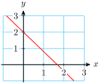
Answer.
\(129.8\degree\)
Thinking about slope and the angle of inclination can help us understand the graph of the tangent functin.
Example4.47.
What happens to the slope of a line as its angle of inclination \(\alpha\) increases from \(0\degree\) toward \(90\degree\text{?}\)
What happens to the slope of a line as its angle of inclination \(\alpha\) decreases from \(180\degree\) toward \(90\degree\text{?}\)
Solution.
Consider the slopes of the lines shown at right, as \(\alpha\) increases.
\(\alpha\)
\(0\degree\)
\(30\degree\)
\(45\degree\)
\(60\degree\)
\(75\degree\)
\(85\degree\)
\(m\)
\(0\)
\(0.6\)
\(1\)
\(1.7\)
\(3.7\)
\(11.4\)
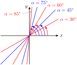
The slopes increase towards infinity as \(\alpha\) increases. But the values of the slope \(m\) are the values of \(\tan (\alpha)\text{,}\) and if we plot those values against \(\alpha\text{,}\) we see the graph of the tangent function emerging.
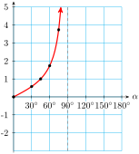
Now consider the slopes of the lines as \(\alpha\) decreases from \(180\degree\) toward \(90\degree\text{.}\)
\(180\degree\)
\(150\degree\)
\(135\degree\)
\(120\degree\)
\(105\degree\)
\(95\degree\)
\(0\)
\(-0.6\)
\(-1\)
\(-1.7\)
\(-3.7\)
\(-11.5\)
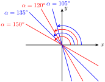
The slopes decrease towards negative infinity as \(\alpha\) decreases. But, as before, the values of the slope \(m\) are the values of \(\tan (\alpha)\text{,}\) and if we plot those values against \(\alpha\text{,}\) we see the graph of the tangent function.
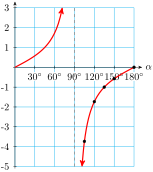
Checkpoint4.48.
What happens to the angle of inclination \(\alpha\) of a line as its slope increases from \(0\) toward \(\infty\text{?}\)
What happens to the angle of inclination \(\alpha\) of a line as its slope decreases through negative values from \(0\) toward \(- \infty\text{?}\)
Answer.
The angle increases from \(0\degree\) toward \(90\degree\text{.}\)
The angle decreases from \(180\degree\) toward \(90\degree\)
SubsectionSinusoidal Functions
Many interesting functions have graphs shaped like sines or cosines, even though they may not be functions of angles.
Example4.49.
Imagine a grandfather clock. As the minute hand sweeps around, the height of its tip changes with time. Which of the graphs shown below best represents the height of the tip of the minute hand as a function of time?
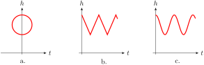
Solution.
Figure (a) is not the graph of a function at all: It does not pass the vertical line test. That is, some values of \(t\text{,}\) such as \(t = 0\text{,}\) correspond to more than one value of \(h\text{,}\) which is not possible in the graph of a function.
Figure (b) shows the height of the minute hand varying between a maximum and minimum value. The height decreases at a constant rate (the graph is straight and the slope is constant) until the minimum is reached, and then increases at a constant rate.
But notice that during the 10 minutes from 12:10 to 12:20 the height of the minute hand decreases about half the diameter of the clock, while from 12:20 to 12:30 the height decreases only about a quarter of the diameter of the clock, as shown at right.
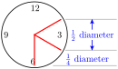
Thus the height of the minute hand does not decrease at a constant rate.
Figure (c) is the best choice. The graph is curved because the slopes are not constant. The graph is steep when the height is changing rapidly, and the graph is nearly horizontal when the height is changing slowly. The height changes slowly near the hour and the half-hour, and more rapidly near the quarter-hours.
Checkpoint4.50.
As the moon revolves around the earth, the percent of the disk that we see varies sinusoidally with a period of approximately 30 days. There are eight phases, starting with the new moon, when the moon’s disk is dark, followed by waxing crescent, first quarter, waxing gibbous, full moon, waning gibbous, last quarter, and waning crescent. Which graph best represents the phases of the moon?
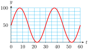
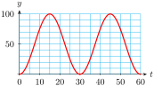
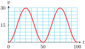
Answer.
(b)
Example4.51.
The table shows the number of hours of daylight in Glasgow, Scotland on the first of each month.
Month
Jan
Feb
Mar
Apr
May
Jun
Jul
Aug
Sep
Oct
Nov
Dec
Daylight Hours
\(7.1\)
\(8.7\)
\(10.7\)
\(13.1\)
\(15.3\)
\(17.2\)
\(17.5\)
\(16.7\)
\(13.8\)
\(11.5\)
\(9.2\)
\(7.5\)
Sketch a sinusoidal graph of daylight hours as a function of time, with \(t = 1\) in January.
Estimate the period, amplitude, and midline of the graph.
Solution.
Plot the data points and fit a sinusoidal curve by eye, as shown below.
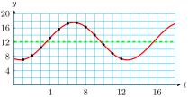
The period of the graph is 12 months. The midline is approximately \(y = 12.25,\) and the amplitude is approximately 5.25.
Checkpoint4.52.
The figure shows the number of daylight hours in Jacksonville, Florida, in Anchorage, Alaska, at the Arctic Circle, and at the Equator.
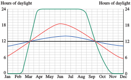
Which graph corresponds to each location?
What are the maxium and minimum number of daylight hours in Jacksonville?
For how long are there 24 hours of daylight per day at the Arctic Circle?
Answer.
From top to bottom in January: Equator, Jacksonville, Anchorage, Arctic Circle
14 hours and 10 hours
Four months
SubsectionOther Periodic Functions
There are other periodic functions besides sinusoidal functions. Any function that repeats a pattern at intervals of fixed length is periodic.
Periodic Function.
The function \(y = f(x)\) is periodic if there is a smallest value of \(p\) such that
for all \(x\text{.}\) The constant \(p\) is called the period of the function.
Example4.53.
Which of the functions shown below are periodic? If the function is periodic, give its period.
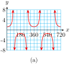
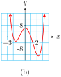
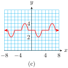
Solution.
This graph is periodic with period 360.
This graph is not periodic.
This graph is periodic with period 8.
Checkpoint4.54.
Which of the functions shown below are periodic? If the function is periodic, give its period.
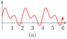
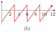
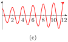
Answer.
Period: 2
Period: 3
Not periodic
Example4.55.
A patient receives regular doses of medication to maintain a certain level of the drug in his body. After each dose, the patient’s body eliminates a certain percent of the medication before the next dose is administered. The graph shows the amount of the drug, in milliliters, in the patient’s body as a function of time in hours.
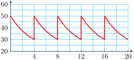
How much of the medication is administered with each dose?
How often is the medication administered?
What percent of the drug is eliminated from the body between doses?
Solution.
The medication level increase from 30 ml to 50 ml at each cycle of the graph, so 20 ml of medication are administerd at each dose.
The medication level peaks sharply evey four hours, when each new dose is administered.
The medication level declines by 20 ml between doses, or \(\dfrac{20}{50} = 0.4\text{,}\) or 40%
Checkpoint4.56.
You are sitting on your front porch late one evening, and you see a light coming down the road tracing out the path shown below, with distances in inches. You realize that you are seeing a bicycle light, fixed to the front wheel of the bike.
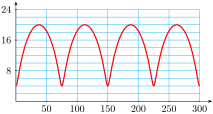
Approximately what is the period of the graph?
How far above the ground is the light?
What is the diameter of the bicycle wheel?
Answer.
75 in
4 in
24 in
Review the following skills you will need for this section.
Algebra Refresher4.6.
Sketch the graph. Give the equations of any vertical or horizontal asymptotes.
\(\displaystyle f(x) = \dfrac{1}{x - 2}\)
\(\displaystyle g(x) = \dfrac{1}{x + 3} \)
\(\displaystyle h(x) = \dfrac{1}{x^2 - 1}\)
\(\displaystyle H(x) = \dfrac{-1}{(x + 1)^2}\)
\(\displaystyle G(x) = \dfrac{2x + 1}{x}\)
\(\displaystyle F(x) = \dfrac{x}{x - 1}\)
\(\underline{\qquad\qquad\qquad\qquad}\)
Algebra Refresher Answers
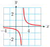
\(\displaystyle x = 2,~~y = 0\)
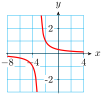
\(\displaystyle x = -3,~~y = 0\)
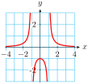
\(\displaystyle x = -1,~~x = 1~~y = 0\)
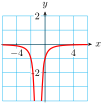
\(\displaystyle x = -1,~~y = 0\)
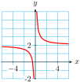
\(\displaystyle x = 0,~~y = 2\)
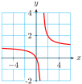
\(\displaystyle x = 1,~~y = 1\)
SubsectionSection 4.3 Summary
SubsubsectionVocabulary
Angle of Inclination
Bearings
Unit Circle
Period
Periodic
SubsubsectionConcepts
To solve an equation of the form \(\sin (\theta) = k\text{,}\) or \(\cos (\theta) = k\text{,}\) or \(\tan (\theta) = k\text{,}\) we can use the appropriate inverse trig key on a calculator to find one solution (or a coterminal angle.) We use reference angles to find a second solution between \(0\degree\) and \(360\degree\text{.}\)
Angles in a Unit Circle.
Let \(P\) be a point on a unit circle determined by the terminal side of an angle \(\theta\) in standard position. Then the coordinates \((x,y)\) of \(P\) are given by
\begin{equation*}
x = \cos (\theta),~~~~~~y = \sin (\theta)
\end{equation*}
Coordinates.
If point \(P\) is located at a distance \(r\) from the origin in the direction specified by angle \(\theta\) in standard position, then the coordinates of \(P\) are
\begin{equation*}
x = r \cos (\theta) ~~~~ \text{and} ~~~~ y = r \sin (\theta)
\end{equation*}
Navigational directions for ships and planes are sometimes given as bearings, which are angles measured clockwise from north.
Angle of Inclination.
The angle of inclination of a line is the angle \(\alpha\) measured in the positive direction from the positive \(x\)-axis to the line. If the slope of the line is \(m\text{,}\) then
\begin{equation*}
\tan \alpha = m
\end{equation*}
where \(0\degree \le \alpha \le 180\degree\text{.}\)
Periodic Function.
The function \(y = f(x)\) is periodic if there is a smallest value of \(p\) such that
\begin{equation*}
f(x + p) = f(x)
\end{equation*}
for all \(x\text{.}\) The constant \(p\) is called the period of the function.
SubsubsectionStudy Questions
If the angle of inclination of a line is greater than \(45\degree\text{,}\) what can you say about its slope?
Sketch two examples of a function with period 8: one that is sinusoidal, and one that is not.
Explain why the coordinates of points on a unit circle are given by the cosine and sine of an angle in standard position.
How are bearings measured?
SubsubsectionSkills
Solve trigonometric equations, graphically and algebraically #1-20
Find coordinates of points on circles #21-36
Use bearings to determine position #37-42
Find and use the angle of inclination of a line #43-50
Identify periodic functions and give their periods #51–54
Sketch periodic functions #55-58
Sketch graphs to model sinusoidal functions #59-68
Analyze periodic graphs #69-7
ExercisesHomework 4.3
Exercise Group.
For Problems 1–8, use the graphs to estimate the solutions to the equations. Show your work on the graph.
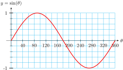
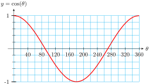
1.
\(\sin \theta = 0.6\)
2.
\(\sin \theta = -0.8\)
3.
\(\cos \theta = 0.3\)
4.
\(\cos \theta = -0.4\)
5.
\(\sin \theta = -0.2\)
6.
\(\sin \theta = 1.2\)
7.
\(\cos \theta = -0.9\)
8.
\(\cos \theta = -1.1\)
Exercise Group.
For Problems 9–14, find all solutions between \(0\degree\) and \(360\degree\text{.}\) Round to the nearest degree.
9.
\(\tan (\theta) = 8.1443\)
10.
\(\sin (\theta) = 0.7880\)
11.
\(\cos (\theta) = 0.9205\)
12.
\(\tan (\theta) = -3.4874\)
13.
\(\sin (\theta) = -0.9962\)
14.
\(\cos (\theta) = -0.0349\)
Exercise Group.
For Problems 15–20, find exact values for all solutions between \(0\degree\) and \(360\degree\text{.}\)
15.
\(\cos (\theta) = -\cos (24\degree)\)
16.
\(\tan(\theta) = -\tan (9\degree)\)
17.
\(\sin (\theta) =-\sin (66\degree)\)
18.
\(\cos (\theta) = -\cos (78\degree)\)
19.
\(\tan (\theta) = -\tan (31\degree)\)
20.
\(\sin (\theta) = -\sin (42\degree)\)
Exercise Group.
For Problems 21–24,
Use a calculator to find the coordinates of the point \(P\text{.}\) Round to hundredths.
Find the coordinates of the point \(Q\) on the circle of radius 2.
21.
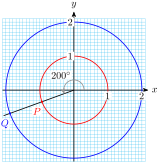
22.
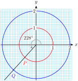
23.
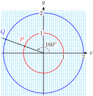
24.
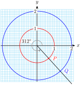
Exercise Group.
For Problems 25–30, find exact values for the coordinates of the point.
25.
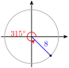
26.
27.
28.
29.
30.
Exercise Group.
For Problems 31–36, find the coordinates of the point, rounded to hundredths.
31.
32.
33.
34.
35.
36.
Exercise Group.
For Problems 37–41, a ship sails from the seaport on the given bearing for the given distance.
Make a sketch showing the ship’s current location relative to the seaport.
How far east or west of the seaport is the ship’s present location? How far north or south?
37.
\(36\degree\text{,}\) 26 miles
38.
\(124\degree\text{,}\) 80 km
39.
\(230\degree\text{,}\) 120 km
40.
\(318\degree\text{,}\) 75 miles
41.
\(285\degree\text{,}\) 32 km
42.
\(192\degree\text{,}\) 260 miles
Exercise Group.
For Problems 43–46,find the angle of inclination of the line.
43.
\(y = \dfrac{5}{4}x - 3\)
44.
\(y = 6 + \dfrac{2}{9}x\)
45.
\(y = -2 - \dfrac{3}{8}x\)
46.
\(y = \dfrac{-7}{2}x + 1\)
Exercise Group.
For Problems 47–50, find an equation for the line passing through the given point with angle of inclination \(\alpha\text{.}\)
47.
\((3,-5), ~\alpha = 28\degree\)
48.
\((-2,6), ~\alpha = 67\degree\)
49.
\((-8,12), ~\alpha = 112\degree\)
50.
\((-4,-1), ~\alpha = 154\degree\)
Exercise Group.
Which of the graphs in Problems Problems 51–54 are periodic? If the graph is periodic, give its period.
51.
52.
53.
54.
Exercise Group.
For Problems 55–58, sketch a periodic function that models the situation.
55.
At a ski slope, the lift chairs take 5 minutes to travel from the bottom, at an elevation of 3000 feet, to the top, at elevation 4000 feet. The cable supporting the ski lift chairs is a loop turning on pulleys at a constant speed. At the top and bottom, the chairs are at a constant elevation for a few seconds to allow skiers to get on and off.
Sketch a graph of \(h(t)\text{,}\) the height of one chair at time \(t\text{.}\) Show at least two complete trips.
What is the period of \(h(t)\text{?}\)
56.
The heater in Paul’s house doesn’t have a thermostat; it runs on a timer. It uses 300 watts when it is running. Paul sets the heater to run from 6 am to noon, and again from 4 pm to 10 pm in the evening.
Sketch a graph of \(P(t)\text{,}\) the power drawn by the heater as a function of time. Show at least two days of heater use.
What is the period of \(P(t)\text{?}\)
57.
Francine adds water to her fish pond once a week to keep the depth at 30 centimeters. During the week the water evaporates at a constant rate of 0.5 centimeters per day.
Sketch a graph of \(D(t)\text{,}\) the depth of the water as a function of time. Show at least two weeks.
What is the period of \(D(t)\text{?}\)
58.
Erin’s fox terrier, Casey, is very energetic and bounces excitedly at dinner time. Casey can jump 30 inches high, and each jump takes him 0.8 seconds.
Sketch a graph of Casey’s height, \(D(t)\text{,}\) as a function of time. Show at least two jumps.
What is the period of \(h(t)\text{?}\)
Exercise Group.
For Problems 59–64, sketch a sinusoidal function that models the situation.
59.
Delbert’s bicycle wheel is 24 inches in diameter, and he has a light attached to the spokes 10 inches from the center of the wheel. It is dark, and he is cycling home slowly from work. The bicycle wheel makes one revolution every second.
At \(t = 0\text{,}\) the light is at its highest point the bicycle wheel. Sketch a graph of the light’s height as a function of \(t\text{.}\)
Give the period, midline, and amplitude of your graph.
60.
The paddlewheel on the Delta Queen steamboat is 28 feet in diameter, and is rotating once every ten seconds. The bottom of the paddlewheel is 4 feet below the surface of the water.
The ship’s logo is painted on the center of one of the paddlewheel blades. At \(t = 0\text{,}\) the logo is at the top of the wheel. Sketch a graph of the logo’s heightabove the water as a function of \(t\text{.}\)
Give the period, midline, and amplitude of your graph.
61.
The population of mosquitoes at Marsh Lake is a sinusoidal function of time. The population peaks around June 1 at about 6000 mosquitoes per square kilometer, and is smallest on December 1, at 1000 mosquitoes per square kilometer.
Sketch a graph of \(M(t)\text{,}\) the number of mosquitoes as a function of the month, where \(t = 0\) on January 1.
Give the period, midline, and amplitude of your graph.
62.
The height of the tide in Cabot Cove can be approximated by a sinusoidal function. At 5 am on July 23, the water level reached its high mark at the 20-foot line on the pier, and at 11 am, the water level was at its lowest at the 4-foot line.
Sketch a graph of \(W(t)\text{,}\) the water level as a function of time, from midnight on July 23 to midnight on July 24.
Give the period, midline, and amplitude of your graph.
63.
The average daily maximum temperature in Stockholm, Sweden is \(30\degree\)F in January and \(72\degree\) F in July.
Sketch a sinusoidal graph of \(S(t)\text{,}\) the average maximum temperature in Stockholm as a function of time, for one year.
Give the period, midline, and amplitude of your graph.
64.
The average daily maximum temperature in Riyadh, Saudi Arabia is \(86\degree\) Fin January and \(113\degree\) F in July.
Sketch a sinusoidal graph of \(R(t)\text{,}\) the average maximum temperature in Riyadh as a function of time, for one year.
Give the period, midline, and amplitude of your graph.
65.
Each situation describes a periodic function. Match each situation with the appropriate graph.
When the heart contracts, blood pressure in the arteries rises rapidly to a peak (systolic blood pressure) and then falls off quickly to a minimum (diastolic blood pressure). Blood pressure is a function of time.
After an injection is given to a patient, the amount of the drug present in his bloodstream decreases over time. The patient receives injections at regular intervals to restore the drug level to the prescribed level. The amount of the drug present is a function of time.
The monorail shuttle train between the north and south terminals at Gatwick Airport departs from the south terminal every 12 minutes. The distance from the train to the south terminal is a function of time.
Delbert gets a haircut every two weeks. The length of his hair is a function of time.
66.
Match each of the following situations with an appropriate graph below.
The number of hours of daylight in Salt Lake City varies from a minimum of 9.6 hours on the winter solstice to a maximum of 14.4 hours on the summer solstice.
A weight is 6.5 feet above the floor, suspended from the ceiling by a spring. The weight is pulled down to 5 feet above the floor and released, rising past 6.5 feet in 0.5 seconds before attaining its maximum height of feet. Neglecting the effects of friction, the height of the weight will continue to oscillate between its minimum and maximum height.
The voltage used in U.S. electrical current changes from \(155\)V to \(-155\)V and back 60 times each second.
Although the moon is spherical, what we see from earth looks like a disk, sometimes only partly visible. The percentage of the moon’s disk that is visible varies between 0 (at new moon) to 100 (at full moon).
67.
The table shows sunrise and sunset times in Los Angeles on the fifteenth of each month.
Month
Oct
Nov
Dec
Jan
Feb
Mar
Sunrise
\(5:58\)
\(6:26\)
\(6:51\)
\(6:59\)
\(6:39\)
\(6:04\)
Sunset
\(17:20\)
\(16:50\)
\(16:45\)
\(17:07\)
\(17:37\)
\(18:01\)
Month
Apr
May
Jun
Jul
Aug
Sep
Sunrise
\(5:22\)
\(4:52\)
\(4:42\)
\(4:43\)
\(5:15\)
\(5:37\)
Sunset
\(18:25\)
\(18:48\)
\(19:07\)
\(19:05\)
\(18:40\)
\(18:00\)
Use the left-hand grid to plot the sunrise times and sketch a sinusoidal graph through the points.
Use the right-hand grid to plot the sunset times and sketch a sinusoidal graph through the points.
68.
Use the data from Problem 67 to complete the table with the hours of sunlight in Los Angeles on the fifteenth of each month.
Month
Oct
Nov
Dec
Jan
Feb
Mar
Hours of Daylight
\(\hphantom{0000}\)
\(\hphantom{0000}\)
\(\hphantom{0000}\)
\(\hphantom{0000}\)
\(\hphantom{0000}\)
\(\hphantom{0000}\)
Month
Apr
May
Jun
Jul
Aug
Sep
Hours of Daylight
\(\hphantom{0000}\)
\(\hphantom{0000}\)
\(\hphantom{0000}\)
\(\hphantom{0000}\)
\(\hphantom{0000}\)
\(\hphantom{0000}\)
Plot the daylight hours and sketch a sinusoidal graph through the points.
69.
Many people who believe in astrology also believe in biorhythms. The graph shows an individual’s three biorhythms, physical, emotional, and intellectual, for 36 days, from \(t = 0\) on September 30 to November 5.
Find the dates of highest and lowest activity for each biorhythm during the month of October.
Find the period of each biorhythm in days.
On the day of your birth, all three biorhythms are at their maximum. How old will you be before all three are again at the maximum level?
70.
The path of a satellite orbiting above the earth makes a sinusoidal graph on a map of the earth, with its midline at the equator. On the map on the next page, sketch a graph for a satellite that orbits the earth every 90 minutes, and strays no farther than 4000 km from the equator. (One degree of latitude is equal to 111 kilometers.) The satellite passes over the spot \(0\degree\) latitude and \(0\degree\) longitude at time \(t = 0\text{.}\) Label a scale on the equator to serve as a time axis for your graph.
71.
Is the function shown periodic? If so, what is its period? If not, explain why not.
Compute the difference between the maximum and minimum function values. Sketch in the midline of the graph.
Find the smallest positive value of \(k\) for which \(f(x) = f(x + k)\) for all \(x\text{.}\)
Find the smallest positive values of \(a\) and \(b\) for which \(f(b) - f(a)\) is a maximum.
72.
Find the period, the maximum and minimum values, and the midline of the graph of \(y = f(x)\) shown.
Sketch a graph of \(y = 2f(x)\text{.}\)
Sketch a graph of \(y = 2 + f(x)\text{.}\)
Modify the graph of \(f(x)\) so that the period is twice its current value.
73.
The graph shows arterial blood pressure, measured in millimeters of mercury (mmHg), as a function of time.
What are the maximum (systolic) and minimum (diastolic) pressures? The pulse pressure is the difference of systolic and diastolic pressures. What is the pulse pressure?
The mean arterial pressure is the diastolic pressure plus one-third of the pulse pressure. Calculate the mean arterial pressure, and draw a horizontal line on the graph at that pressure.
The blood pressure graph repeats its cycle with each heartbeat. What is the heart rate, in beats per minute, of the person whose blood pressure is shown in the graph?
74.
Here is a tide chart for Los Angeles for the week of December 17–23, 2000. The horizontal axis shows time in hours, with \(t = 12\) corresponding to noon on December 17. The vertical axis shows the height of the tide in feet above mean sea level.
High tides occurred at 3:07 am and 2:08 pm on December 17, and low tides at 8:41 am and 9:02 pm. Estimate the heights of the high and low tides on that day.
Is tide height a periodic function of time? Use the information from part (a) to justify your answer.
Make a table showing approximate times and heights for the high tides throughout the week. Make a similar table for the low tides.
Describe the trend in the heights of the high tides over the week. Describe the trend in the heights of the low tides.
What is the largest height difference between consecutive high and low tides during the week shown? When does it occur?
75.
The apparent magnitude of a star is a measure of its brightness as seen from earth. Smaller values of apparent magnitude correspond to brighter stars. The graph below, called a light curve, shows the apparent magnitude of the star Algol as a function of time. Algol is actually a system of two stars, a bright principal star and its dimmer companion, in orbit around each other. As each star passes in front of the other it eclipses some of the light that reaches earth.
The light curve is periodic. What is its period?
What is the range of apparent magnitudes of the Algol system?
Explain the large and small dips in the light curve. What is happening to cause the dips?
76.
Some stars, called Cepheid variable stars, appear to pulse, getting brighter and dimmer periodically. The graph shows the light curve for the star Delta Cephei.
What is the period of the graph?
What is the range of apparent magnitudes for Delta Cephei?